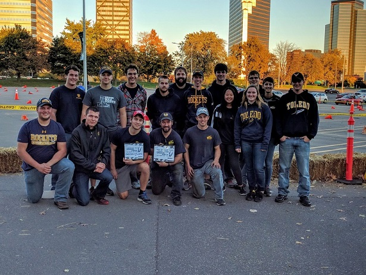
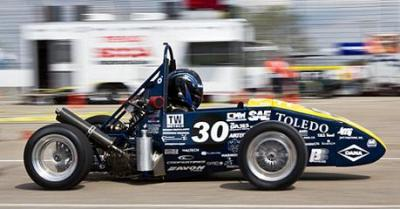
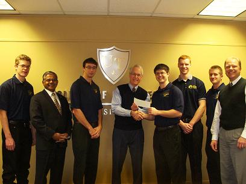
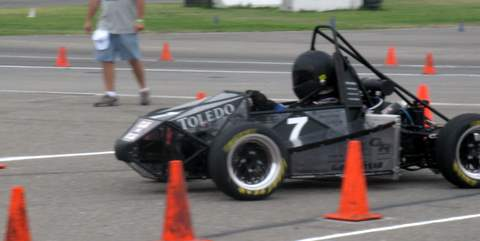

Team News
-
October 8, 2016
After a day of fixing things that broke, we finished 1st by about .5 seconds. This was the first competition that new members could attend and a good way for them to see how our teams works at comps.
This is the last competition for this year's car. The team is excited to start building next year's car.
 -
May 15, 2011
We returned from MIS with a 17th place finish, completing all events once again. We had a great time with TUfast, whom took 2nd place. None of this would have been possible without the generous support of our sponsors. Thank you to all the companies and individuals that contributed to the team this year. As always we learned alot this year and we are looking forward to and have already begun design for next season!
 -
February 5, 2010
Rocket Motorsports is pleased to announce the addition of two platinum sponsors for this year. Dana Corporation and the Intermodal Transportation Institute here at UT have both made generous contributions to the team. The funds are helping us to purchase essential components for the car.
 -
July 1, 2009
The Rocket Motorsports team has returned from California. The car successfully completed all events. We placed 15th out of 84 registered teams. The team would like to thank all of our sponsors who helped make our 2009 car a success.
